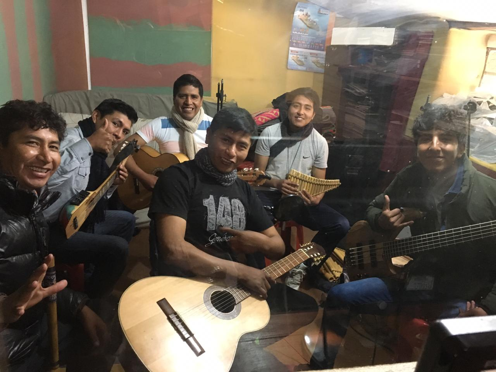

PLAN DE GRABACION
PROYECTO GRABACION
El Ministerio de la Música posee una gran influencia para fortalecer y reflejar nuestros valores musicales. Nuestro mensaje distintivo forma la cultura musical de la iglesia y llega a ser una referencia musical de la iglesia para los oyentes y telespectadores.
La producción de nuestro material reforzará y aumentará la velocidad de la predicación del evangelio que se nos encomendó, será también apoyo para la conservación de nuestra hermandad. Buscando siempre el bienestar y el fortalecimiento de la relación que llevamos con nuestro Padre Celestial.
Nuestra presentación musical, siempre y cuando sea posible, también llevará un mensaje bíblico y un llamado u ofrecimiento de un curso bíblico a aquellos que aún no sean bautizados, tratando de llevarlos a Jesús. Buscando maneras de actuar directamente, y de forma sistemática, en las campañas misioneras y evangelizadoras de la iglesia.
GRABACION DE BASES
Se realizará una grabación general con todos los instrumentos a la vez que servirá como guía para la grabación por instrumentos y voces.
• Hacer que la música debe ocupar un lugar tan especial como la oración y el mensaje de la Biblia, dentro del culto y la adoración a Dios. un medio de promover el crecimiento espiritual, de glorificar a Dios y dirigir al oyente hacia Él.
|  |